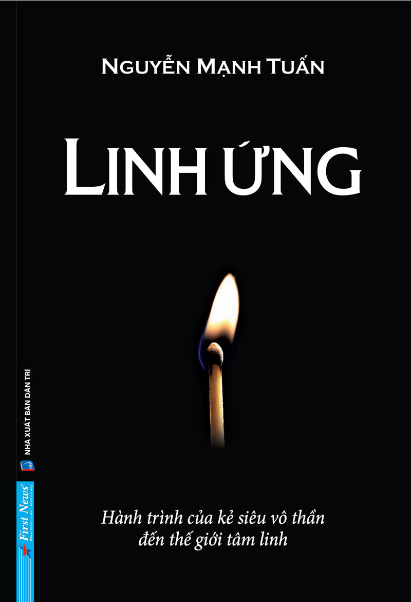

« Back
Linh Ứng
By Nguyễn Mạnh Tuấn

Lời Cảm Ơn
LỜI GIỚI THIỆU
THẦY LƯ
NIỀM TIN NHEN NHÓM
ANH KHÔI
DẤU VẾT Ở HUẾ
DÂN NGỤ CƯ
NGÔI MỘ Ở HUẾ
THẦN TƯỢNG
CHÂN TƯỚNG
LỰA CHỌN CỦA ANH KHÔI
TRONG RỦI CÓ MAY
KIÊN ĐỊNH
LẦN THEO MANH MỐI
KHÔNG BIẾT MỚI SỢ
HỒN ĐANG ĐỨNG CẠNH MỘ
LÝ TƯỞNG VÀ TƯƠNG LAI
SỰ DẪN DẮT MÀU NHIỆM
CON CHIM ƯNG TRÊN ĐỈNH NÚI CAO
QUÝ NHÂN PHÙ TRỢ
DUYÊN KỲ NGỘ
NGƯỜI LÍNH TÌNH BÁO VÔ DANH
MÃI LÀ BA TRONG MỘT
SỰ THẬT KHÓ TIN
TRỞ VỀ
CHỮA LÀNH
DẤU ẤN NGUYỄN MẠNH TUẤN